自然数有加减乘除运算，满足五大运算定律。引入分数作为自然数的扩充之后，就要考虑如何定义分数的加减乘除运算，而且希望分数的加减乘除运算可以继承，拓展自然数的加减乘除运算。我们还希望五大运算定律仍然成立，这可是数的家园的通行法则！
先从分数的加减运算开始。同分母的两个分数相加减是很简单的。
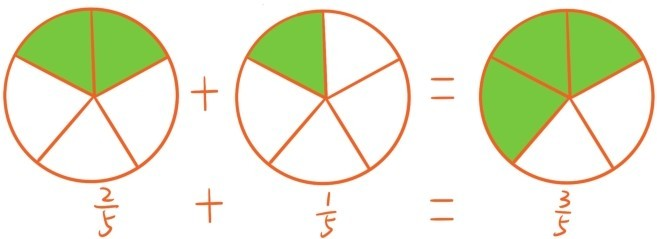
正如上图所示，这时只需让分母保持不变，分子相加减就好了。如果碰到分母不同的两个分数相加减，怎么办呢？
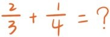
和比较大小一样，先对这两个分数做通分，转化成分母相同的情形，然后再让分子相加减。
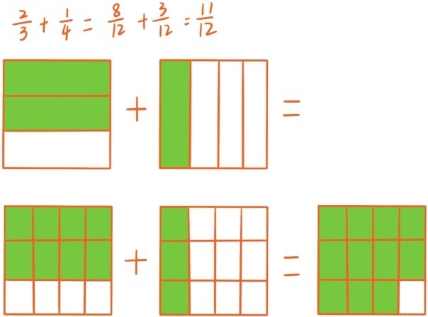
另外两个例子是
如此定义的分数加减法是否合理呢？我们拿运算律做试金石，来看看分数加法是否满足加法交换律和结合律。随意拿两三个分数，在验证加法交换律和结合律之前，可以先对它们做通分，让它们的分母变成是相同的。这时，由于同分母相加实质上就是分子相加，分母不变，所以加法交换律和结合律自然还是保持成立的。比如为什么
和
会成立？是因为等式
2+5=5+2
和
(3+5)+8=3+(5+8)
成立。
现在来讲分数的乘法。假如一辆小车以每小时50千米的速度行驶，3小时内小车行程就是50×3（千米），那 小时内的行程呢？就是（千米）。 小时是指将1小时平均分成5份，取其中2份时间。既然小车行驶的速度是每小时50千米，那每份时间内的行程就是50÷5（千米），2份时间内的行程就是(50÷5)×2（千米）。所以一个数乘以 的意义就是先将这个数平均分成5份，再取其中2份。
再举个例子，一家披萨店出售的每块圆形披萨的价格是20元，而且每块披萨都会切成4小份。如果买4块披萨，就要付20×4元。如果要买3小份，或者 块，就要付元。也可以先计算每小份的价格是20÷4，然后再乘以3。所以一个数乘以 的意义就是先将这个数平均分成4份，再取其中3份。
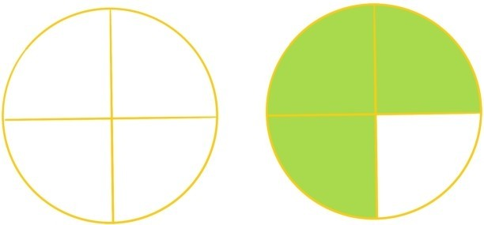
这两个例子充分说明了一个数乘以分数的意义。接下来我们来看看分数乘分数的结果会是什么样。下面是分数 表示的量。
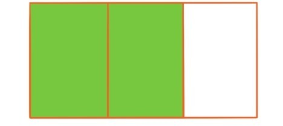
现在，要将它乘以 ，就是将阴影部分平均分成7份，取其中的5份，结果是
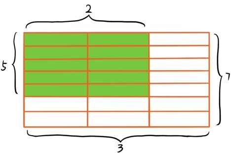
注意这时整个长方形被平均分成3×7份，而阴影部分占了2×5份。所以由此就可以引出分数的乘法法则：
两个分数相乘时，将它们的分母相乘作为新的分母，分子相乘作为新的分子。
如此定义的乘法是否合理呢？首先这种乘法是自然数乘法的拓展，比如5和7这两个数，作为分数相乘和作为自然数相乘结果是一样的
接下来，还是要用运算律做试金石，看看乘法是否满足乘法交换律和乘法结合律，最后再看分数加法乘法是否满足分配律。乘法交换律和乘法结合律的验证是非常简单的。比如验证乘法结合律时，就是任意取三个分数验证下面等式是否成立
先用分数乘法法则将等式左右两边转化成分数，等式变成
这时运用自然数的结合律就能看出两个分数的分子与分母都是相等的。
现在任意取3个分数验证分配律
注意，上面括号中的两个分数的分母是相等的，如果不相等，做通分就好了。运用分数加法乘法法则将等式左右两边转化成分数，等式变成：
这时两边分数的分母是相等的，根据自然数运算的分配律，分子也是相等的，所以等式自然是成立的。
在最后讲分数除法之前，先介绍与除法密切相关的倒数概念。对于每个不等于0的分数，将其分子分母调换之后形成的分数称为原先分数的倒数。比如 的倒数是的倒数是4，5的倒数是 ，1的倒数还是1。倒数最重要的特征是，不等于0的分数乘上它的倒数总是等于1，例如
倒数的另一个特征是两个分数的乘积的倒数，会等于它们的倒数的乘积。
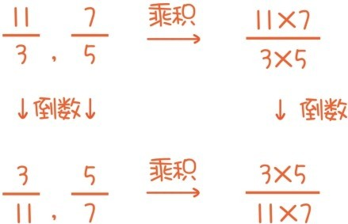
现在可以讲分数除法了。之前提到过，自然数的除法可以看成是乘法的逆过程，比如
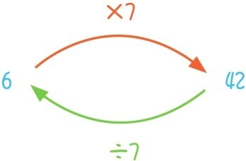
分数除法也是分数乘法的逆过程，所以现在的问题就是如何寻找下面这种转化过程的逆过程
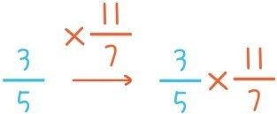
这里倒数概念和乘法结合律开始起作用了。如果将上面这个转化结果乘以的倒数，结果又变成
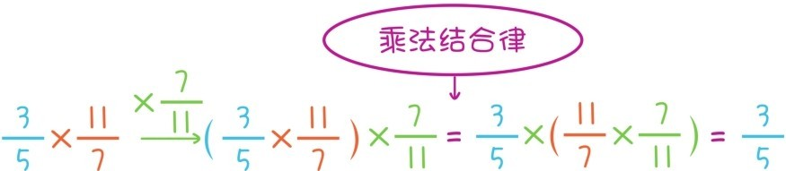
因此乘以一个不等于0的分数和乘以它的倒数是两个互逆的过程。所以就把除以一个分数定义为乘以它的倒数，例如
最初引入分数，例如 的时候，是指望能有现在，按照这个除法法则，确实会有
完美地吻合了！
引入分数使得每个不等于0的分数都有倒数，这导致除法变成可以由乘法来定义，或者说除法是由乘法派生的，除法无非就是乘以倒数，除法的概念变成是次要的甚至是多余的。
这也能解释为什么五大运算定律没有涉及除法，因为关于除法的一切运算“定律”本质上都是乘法的运算定律。实际上关于除法的一切问题本质上都可以归结为乘法的问题。例如，关于除法，常常有人问
问题14：为什么，为什么连4续除以两个数会等于除以它们的乘积？
其实，连续除以两个数，实质上就是连续乘以它们的倒数，而这又相当于是乘以它们的倒数的乘积，而倒数的乘积正是乘积的倒数。
分数的运算从数轴上看，也对应着数轴的变换。如果用长度表示分数，就表示两根长度分别为的线段拼接后的长度。如果让所有分数都加上 ，这时，0变成变成，4变成4+ ……这相当于把整条数轴向右平移 。
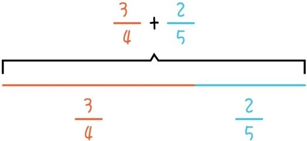
如果把所有分数都乘以 ，或者除以2，那么0保持不变，1变成 ，2变成1，4变成2……这相当于保持原点不动，把整条数轴均匀地缩短为原先的 倍
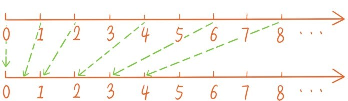
最后对分数做一次总结：为了让除法或者平均分没有障碍，我们引入分数，给出了分数的加减乘除运算，验证了五大运算定律对分数加法乘法仍然成立。这种验证相当于是给分数们一个合法的身份证明，从现在开始分数们在数的家园中取得了永久居住权！
提问时间
1.7.1 计算。
1.7.2 求数轴上 和 所对应的两个点的距离。
1.7.3 数轴的一个平移变换，把 变换为 ，那么它会把1变换为哪个分数，又会把哪个分数变换为 ？
1.7.4 数轴的一个保持原点不动的均匀伸缩变换，把4变换为3，那么它会把3变换为哪个分数，把 变换为哪个分数，又会把哪个分数变换为 ？